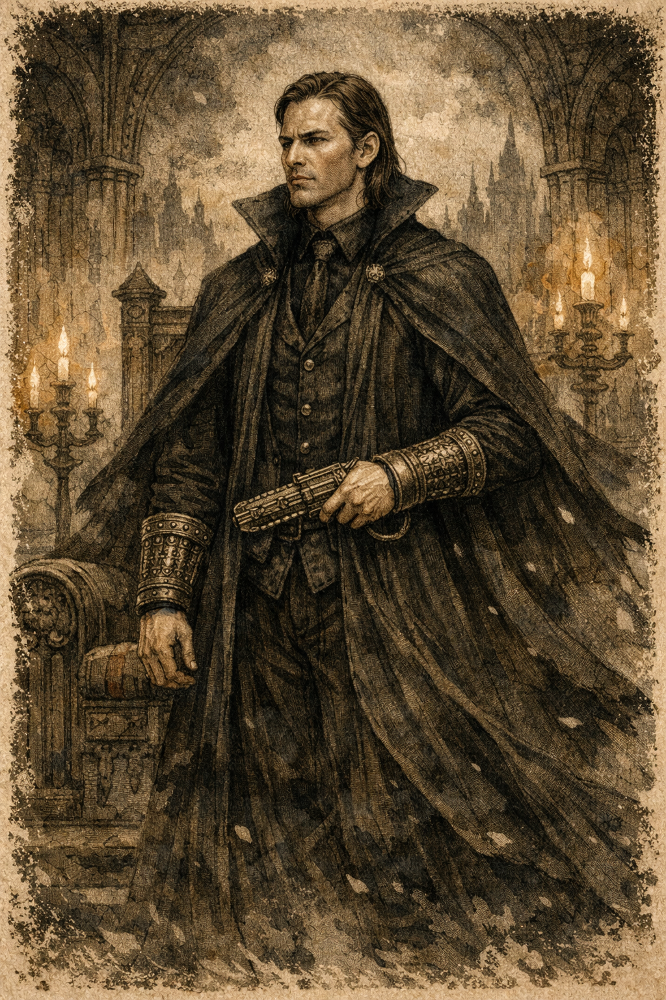
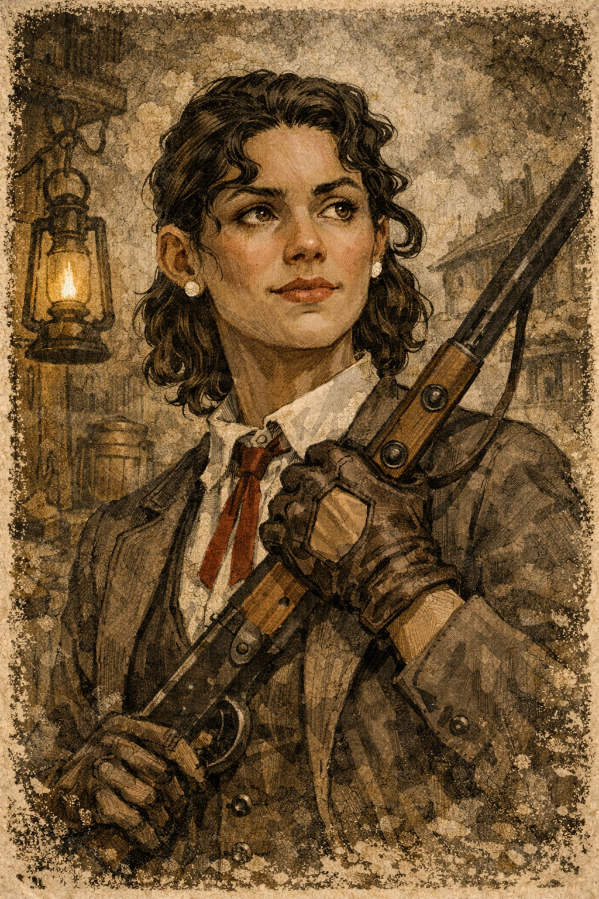
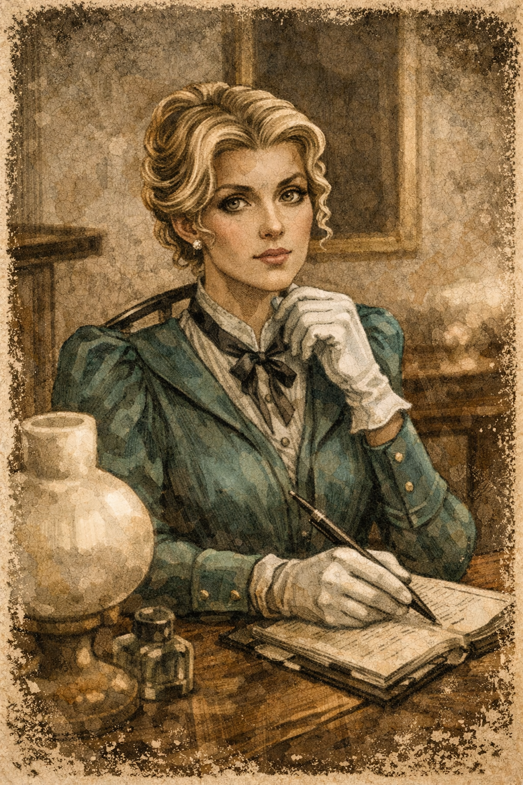
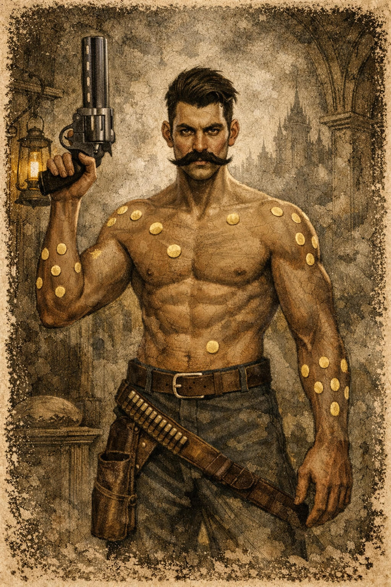

Personajes de la Era 2
Waxillium Ladrian
Waxillium Ladrian es el protagonista principal de la segunda era. Nacido en una familia noble, decide abandonar su vida aristocrática para convertirse en un agente de la ley en las zonas fronterizas.
Como Twinborn, combina la alomancia del acero con la feruquimia del hierro, lo que le permite manipular metales y alterar su peso. Su historia gira en torno al conflicto entre su deber personal, sus responsabilidades familiares y su deseo de hacer justicia.

Wayne
Wayne es el compañero inseparable de Wax y uno de los personajes más carismáticos de la saga. Su personalidad humorística y su tendencia a cambiar objetos mediante intercambios absurdos lo convierten en una figura impredecible. Sin embargo, detrás de su comportamiento excéntrico se esconde una profunda culpa por errores del pasado.
Wayne utiliza su capacidad alomántica de bendaleo para crear burbujas de velocidad que alteran el flujo del tiempo durante los combates.

Marasi Colms
Marasi Colms comienza como una estudiante apasionada por el estudio de la ley y la historia. Con el tiempo se convierte en una investigadora y agente capaz de enfrentarse a conspiraciones complejas dentro de la ciudad de Elendel.
Su evolución refleja el paso de la teoría a la práctica, mostrando cómo el conocimiento puede convertirse en una herramienta poderosa para cambiar la sociedad.

Steris Harms
Steris Harms es inicialmente presentada como una noble rígida y excesivamente organizada. Sin embargo, su personaje evoluciona mostrando una personalidad compleja marcada por la planificación meticulosa y la necesidad de controlar situaciones imprevisibles.
Steris aporta estabilidad al grupo y demuestra que la preparación y el pensamiento estratégico pueden ser tan importantes como la fuerza o los poderes sobrenaturales.

Miles Hundredlives
Miles Hundredlives es uno de los antagonistas principales de la segunda era. Como Twinborn que combina alomancia y feruquimia del oro, posee una capacidad de regeneración casi ilimitada que lo convierte en un enemigo extremadamente difícil de derrotar.
Su ideología radical y su visión del mundo lo llevan a enfrentarse directamente al sistema político de Elendel.
